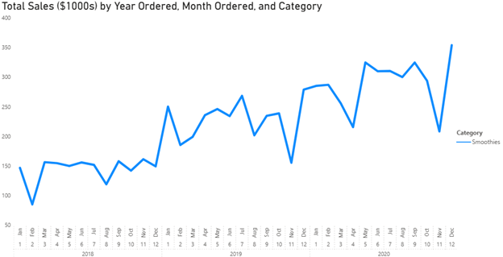

Line charts are best at showing time-series data, which is data where one point corresponds to a quantitative, or having a magnitude that can be measured with numbers, value at a single point or period in time, with the entirety of the points showing an ideally-continuous stretch of time. They are simple and approachable, relying on slopes to convey changes. The steeper the line segment, the greater the increase or decrease over the given time interval. When there are some time periods you do not have data for, an acceptable strategy for this visualization is to take the average of the quantitative value and include that on the chart for the missing times with a dashed line to indicate that the values are not known for certain.
Top image is a screenshot of a self-made chart from Microsoft Power BI. Created by Alex Lents.